Entrance

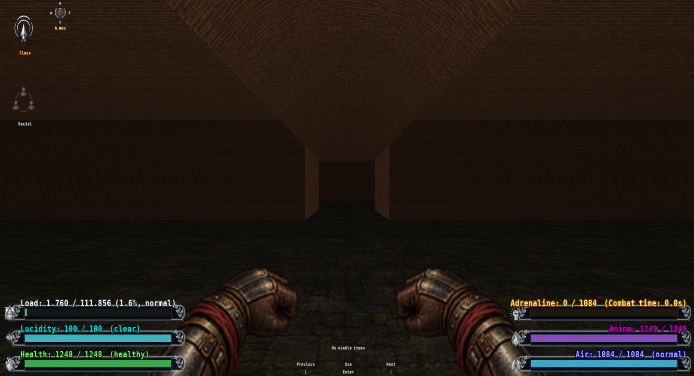

This private proposal applies an owned damp-brick derivative only to the existing exposed 16-MU lower channel faces. The native 64-MU texture repeat, upper walls, geometry, lighting, water, hazards and services remain intact. Exact style awaits the single final author review.
The built-in imagegen tool edited the owned #847 brick. The original prompt, attribution and 1254?1254 output are preserved without pixel postprocessing. Brick bond and scale are visually comparable; pixel-identical relief is not claimed. The AySA reference supplies construction context, not exact archaeological reconstruction.
Two deterministic builds reproduce the package and manifest. Eighteen native gallery samples each verify all 4,638 affected faces. Same-option save/reload and a fresh default restoration pass. The final review helper retains native menus. Camera teleports and observer protection are explicit diagnostic aids; these are not ordinary campaign or all-route tests.
All 18 images below were inspected directly and remain unchanged. The candidate walk capture shows Aira 1084/1 versus control 1084/1084; its cause is unestablished, so those captures do not establish identical HUD/gameplay state. Measured performance pairs have equal recorded state/census samples. Normal AI remains active. Close waterline rendering costs more in this pair, and both options include isolated roughly quarter-second stalls. Queue presentation is not monitor scanout; no general speedup or author acceptance is claimed.
Selection sources ? Provenance ? Exact image prompt ? Generated image ? Exact geometry/material audit ? Save checks ? Frame/tic tails

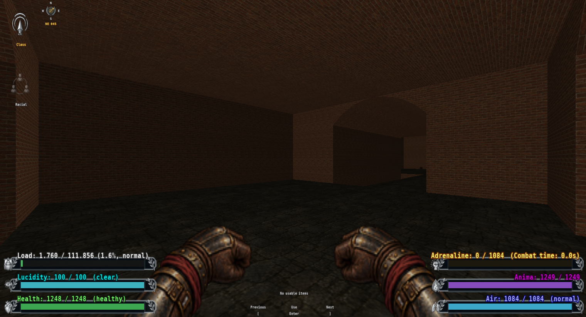
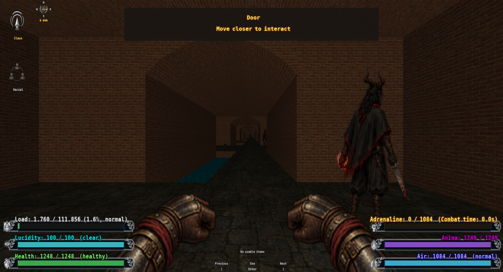
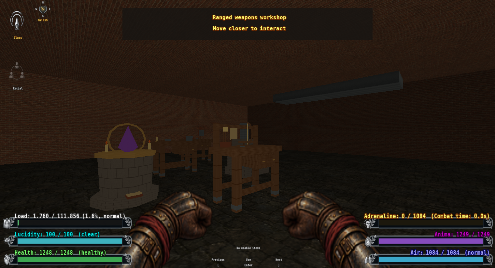

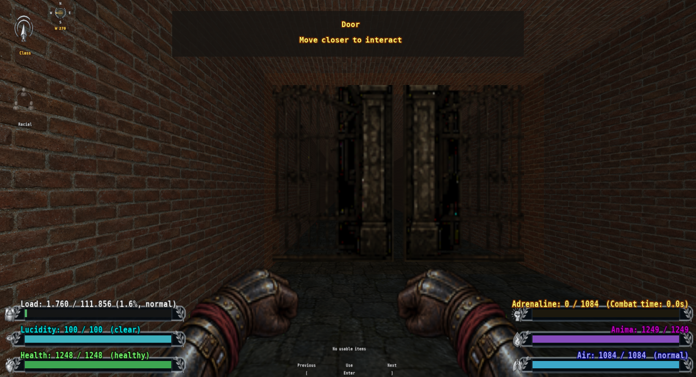

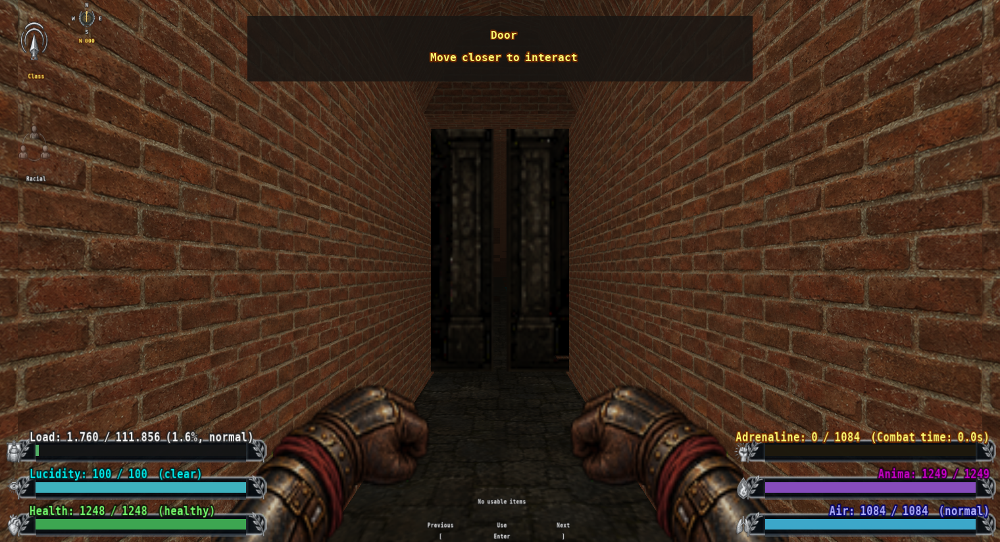
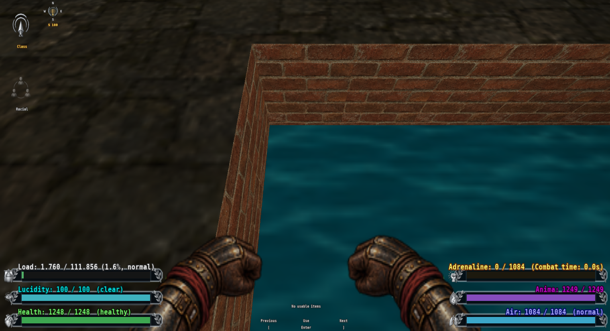
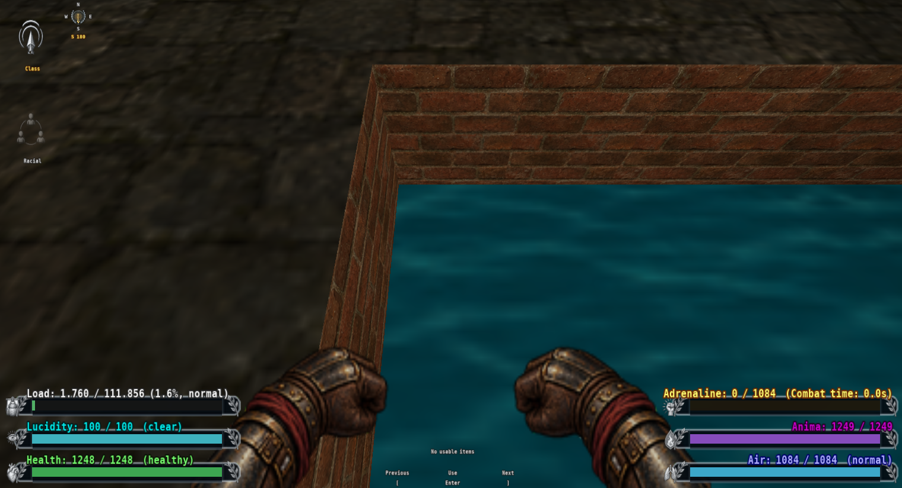
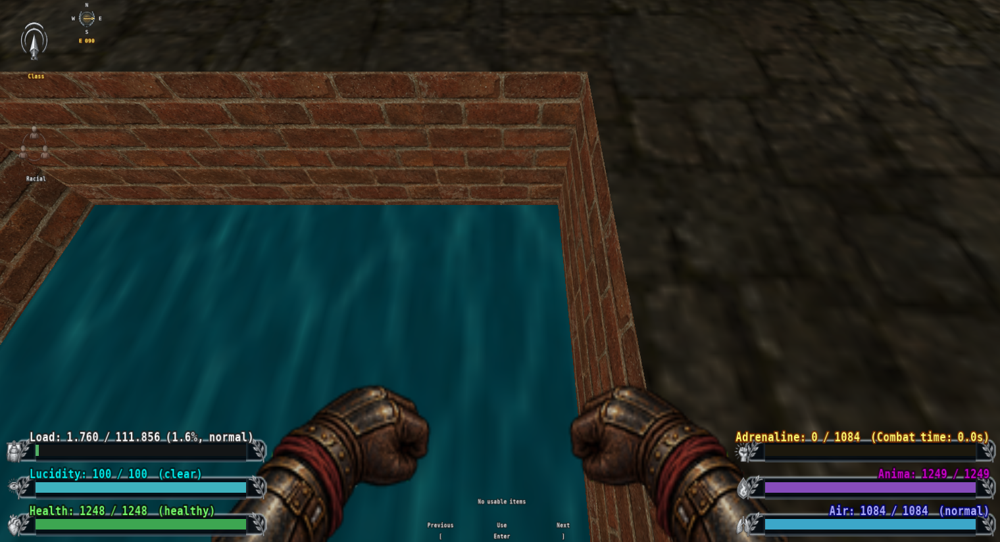
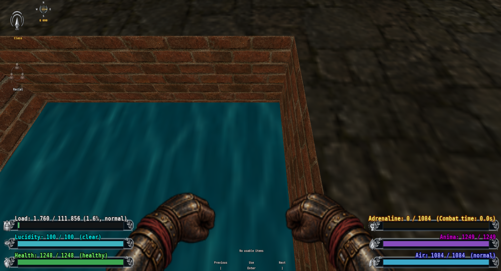
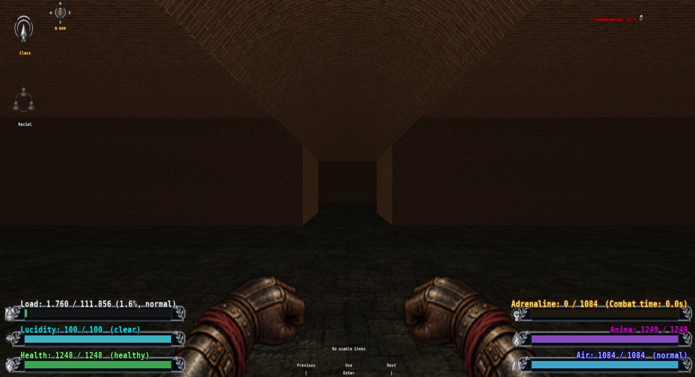
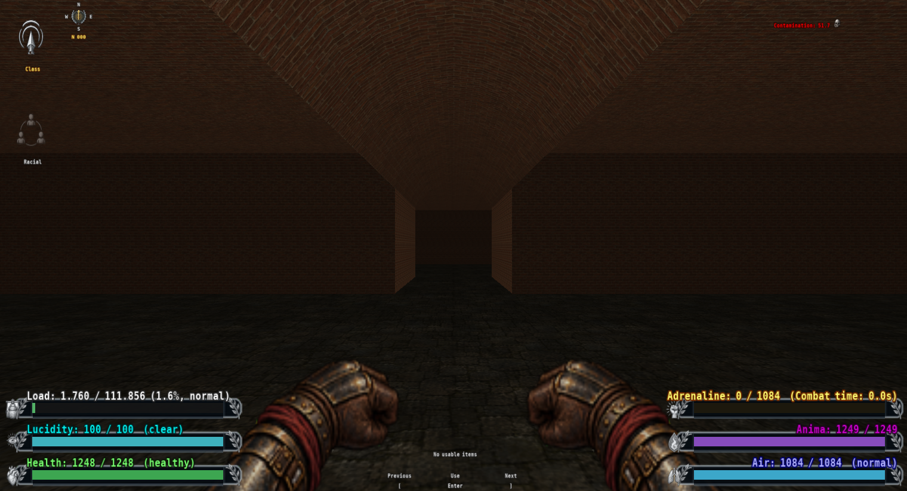